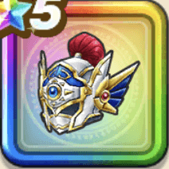

セバスのかぶと
攻略班 9.5点 / 悪魔系への耐性+5%鳥系への耐性+5%すべての状態異常耐性+3%鳥系への耐性+5%水系への耐性+5%ムドーへのダメージ+10%【ゴドハン】スキルの斬撃ダメージ+4%【魔剣士】イオ属性斬撃・体技ダメージ+4%【晴れ】イオ属性斬撃・体技ダメージ+3%イオ属性斬撃・体技ダメージ+8%
くわしい特徴
【レベル別習得スキル】 Lv1悪魔系への耐性+5% Lv3ムドーへのダメージ+10% Lv5鳥系への耐性+5% Lv8【ゴドハン】スキルの斬撃ダメージ+4% Lv8【魔剣士】イオ属性斬撃・体技ダメージ+4% Lv10【晴れ】イオ属性斬撃・体技ダメージ+3% Lv12イオ属性斬撃・体技ダメージ+8% Lv15すべての状態異常耐性+3% Lv18守備力+5 Lv20鳥系への耐性+5% Lv23きようさ+5 Lv25水系への耐性+5% 【限界突破スキル】 1凸攻撃力+10 2凸すばやさ+12 3凸守備力+10 4凸さいだいHP+12